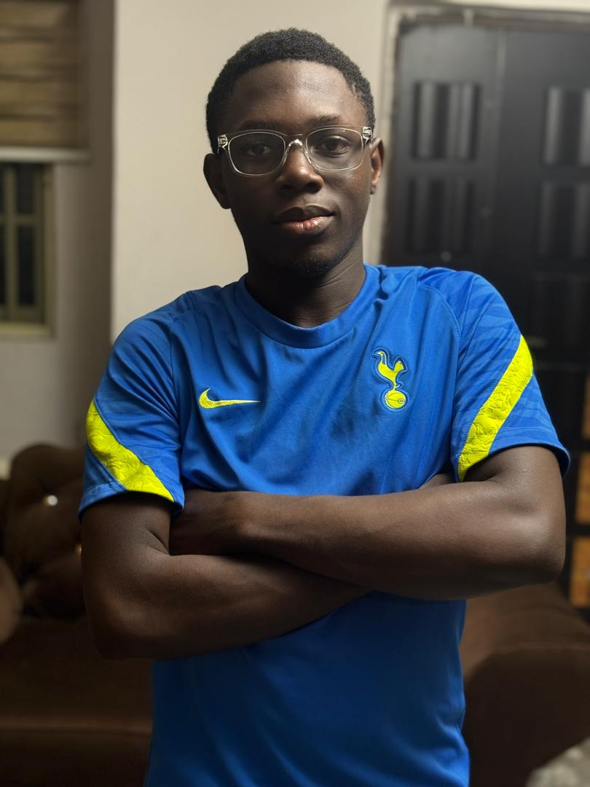

Web Development
Responsive, modern websites designed around your brand, audience and goals.
HTML · CSS · JSAVAILABLE FOR PROJECTS
I’m Ereku David — a Web Developer & IT Technician creating clean, responsive digital experiences and solving practical technology problems.

Curious by nature.
When I was little, I always looked at technology as fascinating. I grew up loving it and the endless possibilities it could create.
Today, that curiosity has turned into practical work. I build and redesign websites, keep digital experiences maintained, and handle hands-on IT problems when technology doesn’t behave.
I’m also developing toward Cloud Security and AI Automation, constantly expanding the tools I can use to turn ideas into useful solutions.
Practical digital services for people and businesses that want their technology to work better.
Responsive, modern websites designed around your brand, audience and goals.
HTML · CSS · JSCleaner layouts, stronger visual hierarchy and a better experience for your visitors.
UI · UX · WEBFLOWUpdates, fixes and ongoing improvements to keep your website useful and reliable.
UPDATES · FIXESHands-on help with operating systems, hardware replacement, troubleshooting and setup.
HARDWARE · OS · SUPPORTA selection of websites and digital concepts showing different sides of my work.
An immersive smart-city concept exploring how African cities could use people, data, AI and sustainable technology to shape tomorrow.
View project ↗A polished restaurant/lounge website concept with menu, gallery, reservation and visit sections.
A hospitality-focused website with a strong visual hero, menu, reviews, gallery and booking CTA.
I care about useful technology, not just knowing a list of tools. My current path combines frontend development with cloud security and AI automation.
My experience isn’t limited to the browser. I’ve worked directly with clients and real devices, solving problems and delivering useful outcomes.
Website development, redesign and maintenance alongside hands-on technical support for clients.
Replaced faulty hard drives and keyboards, installed operating systems and helped clients get their computers working again.
Teaching kids how to use AI tools for productivity and practical everyday tasks.
Helped a business establish its presence on Google Maps with a business listing and location information.
B.Sc. Computer Science · 300 Level
Have something in mind?
Whether you need a website, a redesign, maintenance or practical IT help, let’s talk about what you need.
erekudavid18@gmail.com ↗